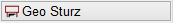
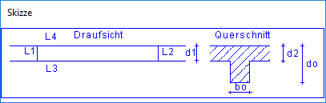
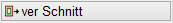
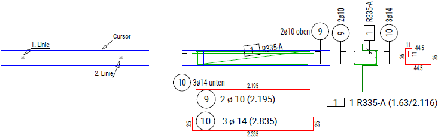

")
Bewehrung eines einfachen Sturzes oder deckengleichen Unterzuges. Obere und untere Bewehrung sind verschieden, die Bügel können aus Stabstahl oder aus Matten gebildet werden.
Die Bearbeitung erfolgt schrittweise anhand der freigeschalteten Optionen. Nach Angabe der Geometrie haben Sie die Möglichkeit, einzelne Parameter zu definieren.
Um die Bewehrung zu übernehmen, muss sie abschließend bestätigt werden. Wenn Sie die Bearbeitung unterbrechen, z. B. durch Anklicken eines anderen Programmteils, wird die nicht abgeschlossene Bewehrung ggf. gelöscht. Bestätigen Sie die Abfrage mit Ja, um die Bearbeitung wieder aufzunehmen.

1.Geometrie angeben
§Klicken Sie im Grundriss die Linien des Sturzes in der gewünschten Reihenfolge an. L1 bis L4 an. [L1 bis L4].
Die Reihenfolge, in der Sie die ersten zwei Linien anklicken, bestimmt die Richtung des Sturzes (vgl. eingeblendete Skizze). Angeklickte Linien werden durch ein Kreuz an der Linienmitte markiert.
 |
§Geben Sie die Sturzhöhe und die Dicken der anschließenden Decken ein und bestätigen Sie die Angaben jeweils mit der Eingabetaste.
d0 |
Sturzhöhe. |
d1 |
Deckenhöhe 1. |
d2 |
Deckenhöhe 2. |
–Nach der letzten Eingabe zeichnet das Programm die komplette Bewehrung in der Draufsicht und als Schnitt im selben Maßstab. Die Positionierung wird automatisch an beiden Darstellungen erstellt.
–In der Abfrage wird "99" angeschrieben. Damit wird verhindert, dass Sie durch einen versehentlichen Rechtsklick die Eingaben beenden. [1=Verlegung OK]. Diese Abfrage wird im Folgenden nach jeder optionalen Parameteranpassung eingeblendet. Wenn Sie die Bewehrung beenden möchten, können Sie durch Anklicken von Ende/OK oder der Eingabe von 1 die Bewehrung abschließend bestätigen (s. Schritt 3)
–Um Parameter anzupassen: Wählen Sie die nächste Funktion im Funktionsbereich. Wir empfehlen, die Funktionen nacheinander abzuarbeiten. Wenn Sie sich sicher sind, dass in den einzelnen Funktionen keine Änderungen vorgenommen werden müssen, können Sie die entsprechenden Funktionen überspringen.
2.Parameter anpassen (optional)

§Klicken Sie auf . §Geben Sie die Werte nacheinander ein bzw. bestätigen Sie die Vorgaben mit der Eingabetaste.
Die Zeichnung wird nach der letzten Eingabe aktualisiert. Sie können jetzt weitere Parameter anpassen oder mit Ende/OK die Bewehrung abschließend bestätigen. |
§Klicken Sie auf . §Geben Sie die Werte nacheinander ein bzw. bestätigen Sie die Vorgaben mit der Eingabetaste.
Die Zeichnung wird nach der letzten Eingabe aktualisiert. Sie können jetzt weitere Parameter anpassen oder mit Ende/OK die Bewehrung abschließend bestätigen. |
Die Bügel können aus Stabstahl oder Matten gebildet werden. §Klicken Sie auf . §Geben Sie nacheinander die Werte ein bzw. bestätigen Sie die vorgeschlagenen Werte mit der Eingabetaste.
Die Zeichnung wird nach der letzten Eingabe aktualisiert. Sie können jetzt weitere Parameter anpassen oder mit Ende/OK die Bewehrung abschließend bestätigen. |
Sie können den Schnitt individuell platzieren oder an einer vorhandenen Linie ausrichten. Die Orientierung ergibt sich aus der ersten und zweiten Linie des Sturzes. §Klicken Sie auf  §Um den Schnitt frei auszurichten: §Um den Schnitt an einer vorhandenen Linie auszurichten:
Sie können jetzt weitere Parameter anpassen oder mit Ende/OK die Bewehrung abschließend bestätigen. |
|||||||


Beim Anlegen einer Bewehrung werden automatisch Auszüge erstellt. Die Auszugsteile (Form und Auszugstext) können nacheinander verschoben werden. Das Programm nimmt automatisch der Reihe nach jeden Auszug und jeden Auszugstext an den Cursor, so dass Sie lediglich die endgültige Lage bestimmen müssen. §Klicken Sie auf . §Klicken Sie an die Stelle, an der die aktuelle Form bzw. der aktuelle Auszugstext erscheinen soll. §Wiederholen Sie den Vorgang, bis alle Auszüge an der gewünschten Stelle platziert sind. –Mit Esc können Sie die Auszüge wieder an die ursprüngliche, vom Programm vorgesehene Stelle zurücksetzen. –Mit Rechtsklick übernehmen Sie die vorgeschlagene Lage. –Sie können jetzt noch weitere Parameter anpassen oder mit Ende/OK die Bewehrung abschließend bestätigen. |
§Klicken Sie auf oder geben Sie unter 1=Verlegung OK den Wert 1 ein und bestätigen Sie mit der Eingabetaste.
Beispiel:
 |
||
Eingabe der Geometrie: vor Anklicken der 3. Linie. |
Bewehrung mit Bügelmatte, Auszüge verschoben. |
Schnitt verschoben, Text der Bügelmatte verschoben. |
Zugehörige Referenzen: